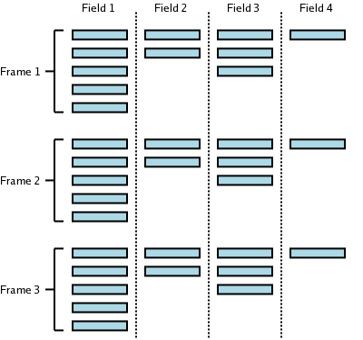

Datasources
Kst uses externally linked datasources to read from data files. This means that new data formats can be transparently added to the Kst repertoire. Currently, the Kst distribution includes the following default datasources:
If you have a data format which you would like Kst to read, it's easy to create your own.
All of the data sources read from files using KIO, which is usually able to load data through common file compression formats (e.g. BZIP2, GZIP, ZIP, TAR) and most popular networking protocols (e.g. HTTP, FTP, SFTP, SMB). For more information on which formats are supported on your system type kinfocenter at the command line and inspect the protocols tab. If Kst detects that you have typed a URL into the filename of a vector or matrix, for example, a “” button will appear. Clicking the button instructs Kst to load the indicated data, and channel it to a suitable data source.
The following concepts are important in understanding how Kst works with data sources. Some terminology is also introduced in this section.
A sample is considered to be the fundamental unit with respect to data files. Each sample consists of one data value in the file. Note, however, that one sample may not correspond to one value in a data vector in Kst, due to the concept of frames.
A field usually corresponds to one vector in Kst. For example, a column in an ASCII data file is considered to be one field. Each field can have an explicit or implicit name. Datasource readers provide functions for reading and obtaining fields and field names.
A frame corresponds to a set number of samples, and each field in a data file can have its own ratio of samples per frame. The size of a data file is measured by the number of frames it contains. For ASCII data files, the number of samples per frame is 1, but for some data files, there may be multiple samples per frame. In the below illustration, the first 3 frames of an imaginary data file are shown. In this particular data file, Field 1 has a ratio of 5 samples per frame, Field 2 has a ratio of 2 samples per frame, Field 3 has a ratio of 3 samples per frame, and Field 4 has a ratio of 1 sample per frame.

Depending on the specific data vector settings in Kst, data from files may be read as frames instead of samples, with either the first sample in a frame or the mean of all the samples in a frame representing the value of the frame. This capability can be useful for reducing extremely large data-sets to a more manageable size.
Some data files may not have a field that represents the x axis of a plot. However, Kst implicitly creates an INDEX field for all data sources. The INDEX field simply contains integers from 0 to N-1, where N is the number of frames in the data file.
The simplest input file format is the ASCII text file. These files are usually human-readable and can be easily created by hand or simple scripts if desired. The following is an example of an ASCII input file.
112.5 3776 428 187.5 5380 429 262.5 5245 345 337.5 2942 184 412.5 1861 119 487.5 2424 138 567.5 2520 162 637.5 1868 144 712.5 1736 211 787.5 1736 211 862.5 2172 292 937.5 1174 377 1000.5 499 623
By default, commented lines in ASCII files start with one of the characters in this set
{#, !, /, ;, c}. All commented lines and empty lines
are ignored by Kst. Valid numbers include those with decimals, negative signs,
or e, to indicate scientific notation. Invalid numbers (such as
English words) are replaced with 0 by Kst.
See the corresponding section for the Plot Dialog.
Here you can enter an expression which you want to designate ASCII data files, in case they are being claimed by another data source.
Data before this line will be ignored. Setting this value to zero ensures that all of the data will be read.
If this option is selected, the field names for the file's vectors will be read from the specified line. If the columns do not have labels, field names are assigned by Kst based on the
order of the columns (with the leftmost column having a field name of 1).
Choose the option which describes how the data is delimited (how the columns and rows are separated). Each column of this file represents a field, while each row represents one frame. Columns are typically separated by tabs or spaces, and rows are separated by carriage returns.
Dirfiles are a very simple data source designed to be read efficiently by Kst. The data source is a directory which contains each raw field in its own binary file. Because the data for a given field are stored sequentially on disk in a binary format, reading is very efficient, typically limited by hard disk speed. Fixed and floating point binary formats are supported, as well as calibrations, bit fields and linear combinations of channels.
The directory contains one file for each field.
These files contain only the raw samples, written sequentially. As in the rest of Kst, each field in a
datasource must have the
same number of frames, but each field may have a different (fixed) number of samples per frame. Fomatting
and calibration information is contained in a file in the Dirfile called
format, which lists each field and its properties. Below is example of such a file: In
this file, a “#” specifies a comment, and for all fields, the first column specifies the field name.
##### Raw fields #### # data types: # c: 8 bit signed # u: 16 bit unsigned. U: 32 bit unsigned # s: 16 bit signed S: 32 bit signed # f: 32 bit float d: 64 bit float # The fieldname is also the name of the raw binary file # holding the data. # Fieldname RAW datatype samples/frame sensor1 RAW s 1 sensor2 RAW U 20 sensor3 RAW c 1 # #### derived fields #### # LINCOM fields: (F_out = F1_in*m+b [+ F2_in*m+b [+ ...]]) # Fieldname LINCOM N Field1_in gain offset S1V LINCOM 1 sensor1 1.52587890625E-4 0.00 # # LINTERP Fields: Calibrate using an ascii lookup table. # lookup table format: # 2 whitespace separated columns # The first colum is raw values, and the second is # a corresponding calibrated value. The file must be # sorted by column 1. # The table is linearly interpolated to the value of # Field_in. # Fieldname LINTERP Field_in Calibration_file S2K LINTERP sensor2 /data/etc/calibration/C2K.cal # # BIT values: the value of 1 bit of raw data: 0 or 1 # Fieldname BIT Field_in bit_num (0 to 7 for chars) RELAY1 BIT sensor3 0 RELAY2 BIT sensor3 1 # # The next line includes the contents of another format file # into this one. Any fields refered to in this file will be # looked for in ../work/, not in ./, so this is essentially # including an entire other datasource. INCLUDE ../work/format
The following code fragment (which foolishly ignores all pretences at error checking) could be used to create this data source...
char bits[1000];
short s1[1000];
unsigned int s2[20000];
int fp;
......
/* fill bits, s1, and s2 with data...*/
......
fp = open("/data/example/sensor3", O_WRONLY|O_CREAT, 00644);
write(fp, bits, 1000*sizeof(char));
close(fp);
fp = open("/data/example/sensor2", O_WRONLY|O_CREAT, 00644);
write(fp, bits, 1000*20*sizeof(unsigned int));
close(fp);
fp = open("/data/example/sensor1", O_WRONLY|O_CREAT, 00644);
write(fp, bits, 1000*sizeof(short));
close(fp);
/* create the ascii file /data/example/format, listed above */
/* create the cal file, /data/etc/calibration/C2K.cal,
described above. */
......
Dirfiles can be used for real time data, but as each field is written separately, this
requires some extra care. First of all, the writing application should avoid all buffering
or caching - raw writes as in the above example work fine. Secondly, the order in which the
fields are written need to be considered: Kst determines the number of frames avalible in
the data source from the size of the file containing the first RAW field encountered in the
format file. So the first RAW field in format needs to be the last one
written, as in the above example. If the data source is being read over NFS, attribute caching
needs to be turned off.
When selecting a dirfile for use in Kst, the directory containing the field files should be
selected. Kst will then automatically look for a format file, if it exists,
to determine the fields and their properties.
HEALPix is a pixelisation scheme for the sphere. More information can be found at http://healpix.jpl.nasa.gov/. HEALPix data is typically be loaded into Kst as a matrix. For this data source to work you must have the CFITSIO libraries installed. An image of a sample HEALPix matrix is shown below:
Here is the configuration dialog for the HEALPix data source, an explanation of the possible options is given underneath:
The size of the matrix to create based on the HEALPix data. The larger the matrix, the higher the resolution. If you choose dimensions which are larger than the resolution of the data in the HEALPix file, you will be able to see the shape of the HEALPix pixels in the image of the matrix.
The colatitude / azimuth range of data to extract.
The colatitude / azimuth range of data to extract.
The QImage datasource allows you to read image data into Kst matrices from a variety of formats. The collection of supported formats depends on the libraries installed on your system, but most popular formats are generally readable. If you'd just like to add a picutre to a plot, then the Picture annotation object is a better choice to use. An example of an image plotted from a QImage sourced matrix is shown below:
This is a “helper” data source, which allows you to access data through a file pointer. If you put the URL or path of a data file on the first line of a text file with the extension .cur, then the Indirect data source is used to load the referenced file. The use of this is that the contents of the .cur file can then be externally modified to change the data file which is loaded by Kst.
The Common Data Format (CDF) was developed by NASA. It is described as “a self-describing data format for the storage and manipulation of scalar and multidimensional data in a platform- and discipline-independent fashion.”. This means that it is a generalized file format for storing and retrieving data, similar to FITS. For this datasource to work you must have the CDF libraries installed.
The network Common Data Form (netCDF) was developed by Unidata. They describe it as “a set of interfaces for array-oriented data access and a freely-distributed collection of data access libraries for C, Fortran, C++, Java, and other languages. The netCDF libraries support a machine-independent format for representing scientific data. Together, the interfaces, libraries, and format support the creation, access, and sharing of scientific data.”. In practice, it is similar to the FITS and CDF formats. For this datasource to work you must have the netCDF libraries installed.
The LFIIO datasource reads FITS format data files created by the LFI component of the Planck satellite. It is currently the default reader for FITS files in Kst. For this datasource to work you must have CFITSIO installed.
This datasource allows you to load vectors from WMAP Time Ordered Data (TOD) files. For more information, see http://lambda.gsfc.nasa.gov/. For this datasource to work you must have CFITSIO installed.
This datasource allows you to read the datafiles produced for SCUBA, an instrument on the JCMT telescope in Hawaii.


Would you like to make a comment or contribute an update to this page?
Send feedback to the KDE Docs Team